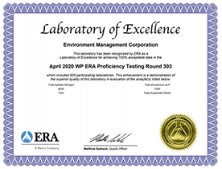
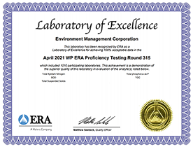
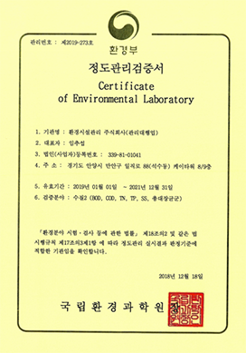
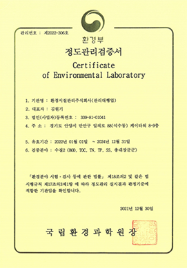

기술역량
정도관리 란?
-
사전적 의미
情度管理
임상 검사의 측정치가 항상 일정한 정확도와
정밀도를 유지하게끔 검사의 각 과정을 기술적,
통계적으로 관리하는 일련의 작업
※정확도 : 참값에 가까운 정도,
정밀도 : 측정값의 재현성 정도 -
평가대상
환경분야
시험·검사 등에 관한 법률환경측정기기검사기관, 측정대행업자,
오염도 검사기관, 공공폐수처리시설,
공공하수처리시설, 공공하수도 관리대행업자
※숙련도 시험/현장평가 모두 적합 시
정도관리 검증서 유지 -
관련 법
환경분야
시험·검사 등에 관한 법률시험·검사기관에 대하여
시험·검사 등에 필요한 능력과 시험
검사 등을 한 자료의 검증 등을 하는 제도 -
관련 규정
환경 시험·검사기관
정도관리 운영 등에 관한 규정시험검사기관이 시험검사 결과의 신뢰도를
확보하기 위하여 내부적으로 ISO 17025를 인용한
정도관리 시스템을 확립 시행하고, 외부적으로
이에 대하여 주기적으로 검증평가를 받는 것
※평가기관 : 국립환경과학원, 평가주기 : 3년/회 -
숙련도 시험
매년 시행
(국립환경과학원)평가방법 : 매년 국립환경과학원에서
미지시료를 하달하여 Z-score로 판정,
1,2차 부적합 시 당해년도 실험실 폐쇄조치
※관리대행업자는 본사만 진행 (관할 실험실은 자체 숙련도) -
현장 평가
3년/회 주기 시행
(국립환경과학원)평가방법 : 매년 당해년도 현장평가
대상기관 공지 대표 실험실 방문/수검
(전체 실험실 서류 수검)
정도관리 실험실 현황
-
공공하수
정도관리 실험실 -
공공폐수
정도관리 실험실
- 공공하수
- 공공폐수
관리대행업 대표실험실 숙련도 시험
- 
- 
-
- ·국제숙련도 시험 “적합, Excellence”
- ·국제숙련도 시험 참여 이력
-
- ‘19년 평가 항목 (BOD, COD, SS, T-N, T-P) “적합”
- ‘20년 평가 항목 (BOD, COD, TOC, SS, T-N, T-P) “적합”
- ‘21년 평가 항목 (BOD, TOC, SS, T-N, T-P) “적합”
관리대행업 정도관리 검증서
- 
- 
-
·EMC 공공하수도 관리대행업 “검증서” 획득
·현장평가 이력 (국립환경과학원 주관) -
·‘18년 최초 평가 (50개 실험실, 적합)
검증 기간 : 2019.01.01 ~ 2021.12.31.
·‘21년 현장 평가 (46개 실험실, 적합)
검증 기간 : 2022.01.01 ~ 2024.12.31.
분석실 구성원 역량강화
권역별 시험∙분석 기술책임자 지정 “A-Master” 제도 시행
-
A-Master 란 ?
수질분석분야 최상위 자격인 “수질측정분석사” 및 ISO/IEC 17025 평가사 교육과정을
이수 한 분석실 구성원 중 권역별 시험∙분석 기술책임자를 지정하고 각 실험실별
분석실 구성원에 대한 기술지도 및 역량강화를 통한 시험분석결과 정확도 & 신뢰성 확보 -
수질측정분석사 양성 지원 제도 시행
수질측정분석사 1차 시험 페스 구성원에 대하여, 측정분석사 자격을 보유한 내부강사의
체계적인 2차 실기 시험 (원자흡수분광광도계 (AAS), 기체크로마토그래피(GC)) 교육
※2차 실기 시험 항목 : 유기물질(UV-Vis), 중금속(AAS), 유기물질(GC)
수질 데이터 관리 System (DT)
-
수질 데이터 관리 System ?
- System을 활용한 데이터 관리의 차별화된 기술 역량 확보
- EMC 전체 실험실 기록부 양식을 표준화 하여 동일한 양식의 기록물을 생성하고, *DT 기술을 활용한 Hardcopy 기록형태를 Digital화 하여 기록 및 관리
- **SaaS 기술을 이용한 전체 실험실 On-Line 을 통한 Data 입력 및 관리
※*DT : digital transformation, **SaaS : Software as a Service -
수질 데이터 관리 System 적용 방식
-
시료채취정보 Digital화
-
수질 데이터 System화
-
실시간 운영데이터 관리 감독 기능
-